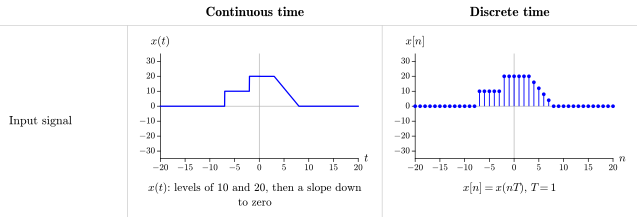
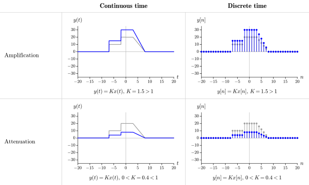
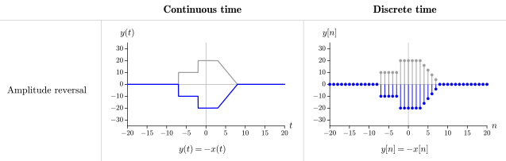
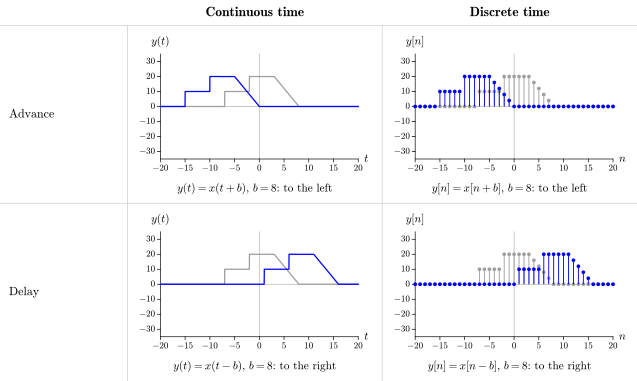
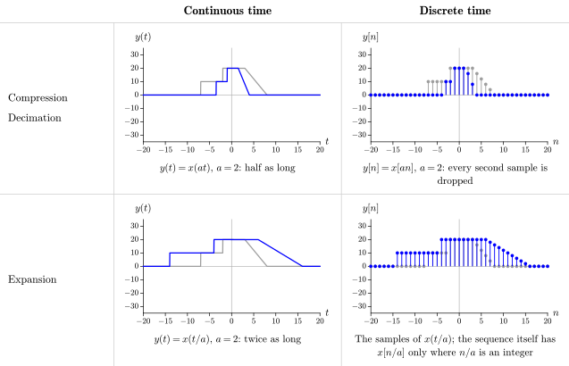
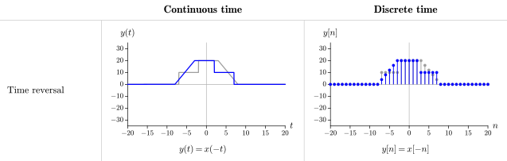
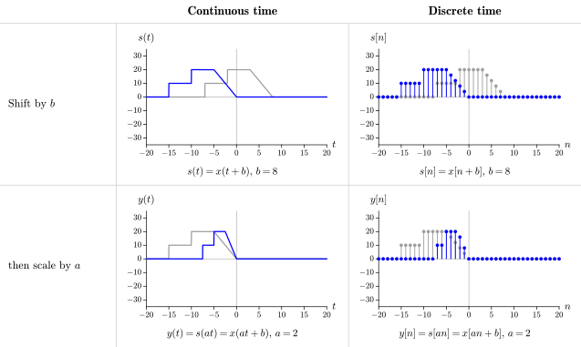
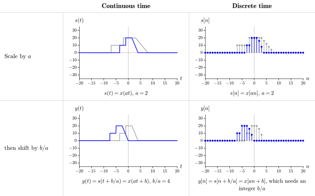

Systems and Transformations#
Prerequisites#
# HIDE/SHOW
# ! pip install -U numpy
# ! pip install -U matplotlib
Visualization in Python#
The folder of this notebook holds a small module, sigplot, with classes for signals, systems and time axes, and a matplotlib renderer. Labels are set in Computer Modern through matplotlib’s mathtext, so no TeX installation is needed.
# HIDE/SHOW
import warnings
warnings.filterwarnings('ignore')
import numpy as np
import matplotlib.pyplot as plt
%matplotlib inline
%config InlineBackend.figure_formats = ['svg']
%config InlineBackend.print_figure_kwargs = {'bbox_inches': None} # keep every figure at its full width
plt.rcParams['svg.hashsalt'] = 'dsp' # reproducible SVG output
from sigplot import Signal, AmplitudeScaling, AmplitudeReversal, TimeShift, TimeScaling, TimeReversal, show
Utilizations#
The module is built from three small class families. Each has one method that its subclasses override, so the same call does the right thing for every member.
Base class |
Subclasses |
Overridden |
|
|---|---|---|---|
Signal |
|
the elementary signals, and every output of a system |
|
System |
|
|
|
Time axis |
|
|
|
A system is an object that is called with a signal and returns a signal: y = TimeShift(8)(x). A new system is a subclass of System with its own apply. AmplitudeReversal is an AmplitudeScaling with the gain \(-1\) and TimeReversal is a TimeScaling with the factor \(-1\), and first >> second is the cascade of two systems. Every system names its output through its label, for example Advance or Delay by the sign of the shift; named gives another name.
show(a, b, notes=[...]) draws the signals a and b as two rows: their names in the first column, then the curve over continuous time and the sequence of its samples over discrete time. notes holds the text that goes right under the plots, for every signal a pair (continuous, discrete) or one text for both.
Every system on this page acts on the same input signal x, which is defined below: two flat levels and a slope. reference=x draws this input in grey behind every output, so each figure shows what the system has changed. The output is named \(y\), and an intermediate signal \(s\).
# HIDE/SHOW
class Input(Signal):
"""Input signal"""
def values(self, t):
return np.select([(t >= -7) & (t < -2), (t >= -2) & (t < 3), (t >= 3) & (t < 8)], [10.0, 20.0, 32 - 4 * t], 0.0)
x = Input() # the input signal of every system on this page
SPAN, YLIM = (-20, 20), (-35, 35) # the axes of every figure on this page
a, b = 2, 8 # time scale and time shift of the examples
What are Systems?#
Systems are mappings from input signals to output signals.
Systems are mathematical models that transform input signals into output signals.
On this page a system transforms a single input signal into a single output signal: \(y(t)=\mathcal{H}\{x(t)\}\) or \(y[n]=\mathcal{H}\{x[n]\}\).
Types of Systems#
Continuous-time (CT) systems: input and output are functions of \(t\)
Discrete-time (DT) systems: input and output are sequences
Deterministic systems: the same input always gives the same output
Probabilistic systems: the output also depends on chance
The systems on this page are deterministic. Each of them is shown twice, as a continuous-time system and as a discrete-time system, and each acts on the following input.
# HIDE/SHOW
show(x, span=SPAN, ylim=YLIM, notes=[
('$x(t)$: levels of 10 and 20, then a slope down to zero',
'$x[n]=x(nT)$, $T=1$')])

Rigid (Shape-Preserving) Systems#
The simplest systems keep the shape of the signal. They only rescale, mirror or move it, along the amplitude axis or along the time axis. In every figure the input is grey and the output is blue.
Continuous time |
Discrete time |
Effect |
|
|---|---|---|---|
Amplitude scaling |
\(y(t)=Kx(t)\) |
\(y[n]=Kx[n]\) |
taller for \(K>1\), flatter for \(0<K<1\) |
Amplitude reversal |
\(y(t)=-x(t)\) |
\(y[n]=-x[n]\) |
mirrored about the time axis |
Time shifting |
\(y(t)=x(t\pm b)\) |
\(y[n]=x[n\pm b]\) |
moved to the left for \(+b\), to the right for \(-b\) |
Time scaling |
\(y(t)=x(at)\) |
\(y[n]=x[an]\) |
compressed for \(a>1\), stretched for \(0<a<1\) |
Time reversal |
\(y(t)=x(-t)\) |
\(y[n]=x[-n]\) |
mirrored about \(t=0\) |
In the sections below \(b>0\) and \(a>1\). A discrete-time shift \(b\) is an integer.
Amplitude Scaling#
Every value is multiplied by the gain \(K\). The time axis is untouched.
# HIDE/SHOW
amplified = AmplitudeScaling(1.5)(x)
attenuated = AmplitudeScaling(0.4)(x)
show(amplified, attenuated, span=SPAN, ylim=YLIM, reference=x, symbol='y', notes=[
('$y(t)=Kx(t)$, $K=1.5>1$',
'$y[n]=Kx[n]$, $K=1.5>1$'),
('$y(t)=Kx(t)$, $0<K=0.4<1$',
'$y[n]=Kx[n]$, $0<K=0.4<1$')])

Amplitude Reversal#
Amplitude scaling with \(K=-1\): the signal is mirrored about the time axis.
# HIDE/SHOW
inverted = AmplitudeReversal()(x)
show(inverted, span=SPAN, ylim=YLIM, reference=x, symbol='y', notes=[
('$y(t)=-x(t)$',
'$y[n]=-x[n]$')])

Time Shifting#
A constant is added to the time variable. With \(t+b\) the output takes every value \(b\) earlier than the input, so the signal moves to the left (advance). With \(t-b\) it moves to the right (delay).
# HIDE/SHOW
advanced = TimeShift(+b)(x)
delayed = TimeShift(-b)(x)
show(advanced, delayed, span=SPAN, ylim=YLIM, reference=x, symbol='y', notes=[
('$y(t)=x(t+b)$, $b=8$: to the left',
'$y[n]=x[n+b]$, $b=8$: to the left'),
('$y(t)=x(t-b)$, $b=8$: to the right',
'$y[n]=x[n-b]$, $b=8$: to the right')])

Time Scaling#
The time variable is multiplied by a constant. With \(at\) the output runs \(a\) times as fast as the input, so the signal is compressed towards \(t=0\). With \(t/a\) it is stretched away from \(t=0\). The point \(t=0\) stays where it is. A sequence cannot be scaled as freely as a function of continuous time, since it exists only at the integers.
# HIDE/SHOW
compressed = TimeScaling(a)(x)
stretched = TimeScaling(1 / a)(x)
show(compressed, stretched, span=SPAN, ylim=YLIM, reference=x, symbol='y', notes=[
('$y(t)=x(at)$, $a=2$: half as long',
'$y[n]=x[an]$, $a=2$: every second sample is dropped'),
('$y(t)=x(t/a)$, $a=2$: twice as long',
'The samples of $x(t/a)$; the sequence itself has $x[n/a]$ only where $n/a$ is an integer')])

Time Reversal#
Time scaling with \(a=-1\): the signal is mirrored about \(t=0\).
# HIDE/SHOW
mirrored = TimeReversal()(x)
show(mirrored, span=SPAN, ylim=YLIM, reference=x, symbol='y', notes=[
('$y(t)=x(-t)$',
'$y[n]=x[-n]$')])

Combined Time Operations#
Shifting and scaling together give \(y(t)=x(at+b)\). The two operations can be taken in either order, but the shift is not the same in both. Each row applies one operation to the signal of the row before, which is drawn in grey. Both methods end at the same output, here \(y(t)=x(2t+8)\).
Method 1: Shift, then Scale (Recommended)#
Define \(s(t)=x(t+b)\): add to or subtract from \(t\) only, first.
Define \(y(t)=s(at)=x(at+b)\): multiply or divide \(t\) only, later.
The constants are used as they stand in \(x(at+b)\).
# HIDE/SHOW
shift, scale = TimeShift(b), TimeScaling(a)
s = shift(x).named('Shift by $b$')
y = (shift >> scale)(x).named('then scale by $a$') # the cascade: shift first, then scale
show(s, y, span=SPAN, ylim=YLIM, reference=[x, s], symbol=['s', 'y'], notes=[
('$s(t)=x(t+b)$, $b=8$',
'$s[n]=x[n+b]$, $b=8$'),
('$y(t)=s(at)=x(at+b)$, $a=2$',
'$y[n]=s[an]=x[an+b]$, $a=2$')])

Method 2: Scale, then Shift#
Define \(s(t)=x(at)\).
Define \(y(t)=s\left(t+\dfrac{b}{a}\right)=x(at+b)\).
After scaling, the time axis has changed, so the shift is \(b/a\) and not \(b\).
# HIDE/SHOW
scale, shift = TimeScaling(a), TimeShift(b / a)
s = scale(x).named('Scale by $a$')
y = (scale >> shift)(x).named('then shift by $b/a$') # the cascade: scale first, then shift by b/a
show(s, y, span=SPAN, ylim=YLIM, reference=[x, s], symbol=['s', 'y'], notes=[
('$s(t)=x(at)$, $a=2$',
'$s[n]=x[an]$, $a=2$'),
('$y(t)=s(t+b/a)=x(at+b)$, $b/a=4$',
'$y[n]=s[n+b/a]=x[an+b]$, which needs an integer $b/a$')])
